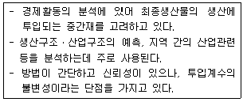
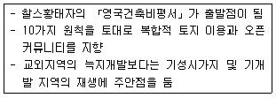
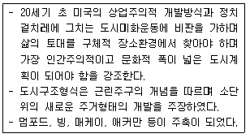
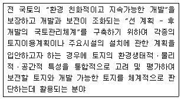
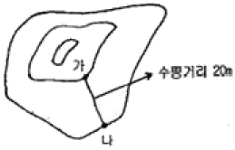
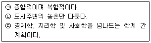
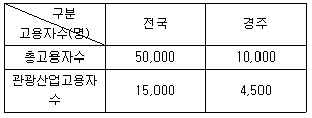
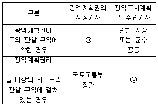

도시계획기사 (2015-03-08 기출문제)
1과목: 도시계획론
1. 다음 중 획지에 부여된 용적율과 실제 이용되고 있는 용적률과의 차이를 다른 부지에 전할 수 있는 제도는?
- 계획단위개발제도(PUD)
- 개발권양도제도(TDR)
- 혼합용도개발제도(MXD)
- 공증권제도(Air Rights)
(정답률: 87%)

2. 토지이용규제의 실현수단을 직접적 수단과 간접적 수단으로 분류할 때, 다음 중 규제와 유도를 주요 내용으로 하는 간접적 수단에 해당하지 않는 것은?
- 지역ㆍ지구ㆍ구역의 지정
- 세금, 보조금의 혜택
- 도시개발사업
- 도시시설의 정비
(정답률: 80%)
3. 도시경제분석 방법 중 아래의 설명에 해당하는 것은?

- 투입산출모형
- 변이-할당분석모형
- 입지상모형
- 지수곡선모형
(정답률: 80%)
4. 다음 중 도시ㆍ군계획시설에 대한 설명으로 옳지 않은 것은?
- 도시ㆍ군계획시설은 시민의 공동생활과 도시의 경제ㆍ사회활동을 원활하게 지원하기 위한 시설이다.
- 도시ㆍ군계획시설은 도시 전체의 발전과 여타 시설과의 기능적 조화를 도모하기 위한 기반시설이다.
- 도시ㆍ군관리계획시설은 기반시설의 공공성 확보를 위해 정부가 직접 설치하며 민간은 참여하지 못한다.
- 도시ㆍ군계획시설은 도시ㆍ군관리계획으로 결정한다.
(정답률: 87%)
5. 장기교통계획 수립의 특징에 해당되는 것은?
- 교통수요 변화가능
- 다양한 교통수단 동시 고려
- 환류지향적
- 시설지향적
(정답률: 61%)
6. 도시계획에서 활용되는 자료를 자료원에 대한 접근이 직접적인지 간접적인지에 따라 1차 자료와 2차 자료로 구분할 때 이에 대한 설명으로 옳지 않은 것은?
- 1차 자료는 계획가가 원하는 현실감 있는 정확한 정보를 제공해 줄 수 있지만 방대한 정보를 얻는 것에는 한계가 있다.
- 2차 자료를 통해 공간적으로 멀리 떨어진 곳이나 시간적으로 조삭 불가능한 과거의 자료를 비교적 적은 노력과 비용으로 이용할 수 있다.
- 서적이나 정기간행물, 각종 통계자료 등은 중요한 1차 자료형이다.
- 2차 자료는 대부분이 정부기관에 의해서 행정구역단위로 조사ㆍ정리되어 있고 도시계획자체를 위해 조사될 것이 아니므로 도시계획의 목적에 부합되지 않는 한계가 있다.
(정답률: 79%)
7. 다음 중 인구노령화 측도 지표와 관련한 설명으로 옳지 않은 것은?
- 노령인구부양비란 65세 이상 인구를 경제활동인구(15~64세)로 나눈 비용이다.
- 노령화지수란 65세 이상의 노령층 인구를 유년층 인구(0~14세)로 나눈 비율이다.
- UN에서 정한 기준에 따르면, 노령화지수가 14% 이상이면 고령화사회로, 20%이상이면 고령사회라고 한다.
- 우리나라는 이미 고령화사회에 진입해 있으며, 향후 도시계획 수립의 새로운 방향 모색이 필요한 시점이다.
(정답률: 75%)
8. 다음 중 아래의 설명과 같은 특징을 갖는 것은?

- 뉴어바니즘(New Urvbanism)
- 전통이웃개발(Traditional Neighborhood Development)
- 도시미화운동(City Beautiful Movement)
- 어반빌리지운동(Urban Yillage Movement)
(정답률: 79%)
9. 도시공원 및 녹지 등에 관한 법률 상 공해ㆍ재해ㆍ사고의 방지를 위하여 설치하는 녹지의 유형으로 옳은 것은?
- 경관녹지
- 미관녹지
- 완충녹지
- 자연녹지
(정답률: 88%)
10. 환경과 개발에 관한 유엔회의(UNCFD)에서 개발과 환경을 조화시키는 고시개발에 대한 내용으로 옳은 것은?
- 지속가능한 도시개발
- 자원ㆍ에너지 절약형 도시개발
- 도ㆍ농 통합적 도시개발
- 입체적ㆍ기능 통합적 도시개발
(정답률: 73%)
11. 다음 중 경관요소의 특징에 따른 구분에 대한 설명으로 옳지 않은 것은?
- 1차적 경관요소는 간접적으로 경관을 조작하여 경관의 개선을 유도하는 비물리적 경관 계획요소이다.
- 2차적 경관요소의 주 내용은 경관컨트롤을 위한 규제 및 인센티브요소이다.
- 3차적 경관요소는 인간의지와 관계없이 형성되는 경관으로서 비물리적, 비조작적 영역으로 볼 수 있는 상징적 경관요소이다.
- 경관계획의 궁극적 목표는 3차적 경관을 바람직하게 형성하는데 둘 수 있다.
(정답률: 53%)
12. 다음 중 도시계획이론의 옹호적 계획에 대한 설명으로 옳은 것은?
- 목표와 문제, 수단과 제약조건 등이 통합적으로 명료하게 제시되는 계획이론이다.
- 분권화된 협상과정과 상호절충과정을 통하여 이루어지는 계획이 합리적임을 주장한 계획이론이다.
- 계획은 합리적이며 과학적이어야 한다는 인식에 바탕을 둔 계획이론이다.
- 피해구제절차와 같은 사회제도를 계획 개념으로 수용한 계획이론이다.
(정답률: 78%)
13. 다음 중 고대 메소포타미아와 이집트의 도시에서 시작되었던 것을 히포다무스(Hippodamus)가 그리스의 도시계획에 적용시킨 것은?
- 격자형 가로망
- 공공시설의 중앙배치
- 공중정원의 설치
- 성곽의 축조
(정답률: 85%)
14. 다음 중 도시ㆍ군기본계획에 대한 설명으로 옳지 않은 것은?
- 도시ㆍ군기본계획은 도시ㆍ군관리계획의 상위계획적 성격을 갖는다.
- 도시ㆍ군기본계획은 20년을 단위로 수립되는 장기계획으로, 매10년마다 타당성 여부를 검토한다.
- 도시ㆍ군기본계획은 물적 측면 뿐 아니라 인구ㆍ산업ㆍ사회개발 등 사회ㆍ경제적 측면을 포괄하는 통합계획이다.
- 도시ㆍ군기본계획의 수립기준은 대통령령으로 정하는 바에 따라 국토부장관이 정한다.
(정답률: 77%)
15. 다음 중 초기의 용도지역제인 유클리드 지역제(Eudidean zonin)에 대한 설명으로 옳지 않은 것은?
- 상위용도(주거 등)을 하위용도(공장 등)로부터 보호하면 충분하다는 전제 하에 누적식 지역제를 채택하였다.
- 실제의 토지이용에 근거하여 발생하는 각종 결과를 기준하여 규제하는 성과규제지역제이다.
- 과도한 민간개발을 막기 위하여 개발촉진보다는 억제에 더 관심을 두었다.
- 토지이용의 규제단위를 각각의 필지로 하여 이를 통해 양호한 시가지를 형성하고자 하였다.
(정답률: 64%)
16. 전국의 총 고용인구는 3000만명이고, 전국의 제조업 고용인구는 600만 명이다. 가상 도시의 총고용인구가 50만 명일 때 가상도시의 제조업 고용인구는 몇 명인가? (단, 가상도시의 제조업의 임지계수는 1이다.)
- 5만 명
- 10만 명
- 15만 명
- 20만 명
(정답률: 69%)
17. 전통건조물 및 문화재의 보전과 보호를 위해 지정할 수 있는 용도지구가 아닌 것은?
- 보존지구
- 역사문화미관지구
- 최고고도지구
- 최저고도지구
(정답률: 66%)
18. 다음의 설명에 해당하는 것은?

- 미국지역계획가협회
- 세계건축가협회
- 르네상스운동
- 에키스틱스운동
(정답률: 74%)
19. 크리스탈러(W. Christaller)의 중심지 이론에서 작은 중심지에서 큰 중심지로 확대되어가는 중심지 계층의 포섬이론 중 K=3에 해당되는 원리는?
- 행정원리
- 교통원리
- 시장원리
- 문화원리
(정답률: 68%)
20. 다음의 설명은 도시계획에서의 GIS활용분야 중 어느 분야에 대한 설명인가?

- 토지적성평가
- 토지이용계획
- 토지보전가치평가
- 국토관리평가
(정답률: 72%)
2과목: 도시설계 및 단지계획
21. C.A. Perry가 주장한 근린주구개념에 의한 초등학교의 적정 유치거리는?
- 200~400m
- 400~800m
- 800~1200m
- 1200~1500m
(정답률: 66%)
22. 대지면적 15,000m2에 60%의 건폐율 연면적 45,000m2의 아파트를 건축할 경우 평균 층수는? (단, 각 층의 바닥면적은 동일함)
- 3층
- 4층
- 5층
- 6층
(정답률: 70%)
23. 주택단지설계에 대한 설명으로 가장 거리가 먼 것은?
- 토지 이용의 효율성을 위해서 세장비는 가능한 한 커야 한다.
- 동서측 가구의 획지는 세장비를 크게 하는 것이 일조의 확보에 유리하다.
- 남북측 가구의 획지는 세장비를 크게 하는 것이 일조의 확보에 유리하다.
- 간선도로변 가구의 길이가 150m를 초과하게 되면 중간에 폭 3~4m의 보행통로를 하는 것이 좋다.
(정답률: 60%)
24. 다음 중 건축물의 특정 층이 계획에서 정한 선의 수직면을 넘어 돌출하여 건축할 수 없는 것으로, 보행공간이나 공동주차통로 등의 확보가 필요한 곳에 지정하는 것은?
- 건축지정선
- 벽면지정선
- 벽면한계선
- 건축한계선
(정답률: 61%)
25. 뉴어바니즘의 주요 계획기법 중 하나인 TND(전통적 근린지역) 계획에 관한 내용 중 옳지 않은 것은?
- 반격 1/4mile의 보행중심 커뮤니티와 장소성을 가진 주거지
- 다양한 타입의 주택
- 좁은 격자형 가로를 통한 교통량의 분산과 속도 감소
- 행정적 통일성을 위한 Top-down형 계획
(정답률: 59%)
26. 다음 가-나 두 지점 사이의 경사가 10%일 때 두 지점의 표고차(등고차)는?

- 1m
- 2m
- 20m
- 200m
(정답률: 79%)
27. 가로에 면한 건물의 주 용도가 사람들과의 접촉이 자주 일어날 수 있도록 하기 위해 상업, 업무단지의 획지 계획시 건물과의 관계에서 무엇을 가장 중요시해야 하는가?
- 융통성
- 전면성
- 적정성
- 방향성
(정답률: 62%)
28. 다음 중 교통광장에 대한 설명으로 옳지 않은 것은?
- 교통광장은 교차점광장, 역전광장, 주요시설광장으로 구분한다.
- 역전에서의 교통혼잡을 방지하고 이용자의 편의를 도모하기 위하여 철도역 앞에 설치한다.
- 주간선도로의 교차지점에 광장을 설치하는 경우 접속도로의 기능에 따라 입체교차방식으로 하거나 교통성, 변속차로 등에 의한 평면교차방식으로 한다.
- 전체 주민이 쉽게 이용할 수 있도록 교통중심지에 설치한다.
(정답률: 57%)
29. 래드번(Radburn)주택 단지계획의 특성에 해당되지 않는 것은?
- 단지내에 통과교를 불허용
- 중앙에 대공원 설치
- 단지내에 직장과 주거의 혼합배치
- 주거구는 슈퍼블럭(super block)단위로 계획
(정답률: 58%)
30. 일반적인 스카이라인 형성기준과 거리가 먼 것은?
- 단일 고층건물의 배경에 산이 있을 경우, 건물의 높이는 산 높이의 60-70%가 되게 한다.
- 고층 건물 주변에 일정높이의 건물이 있을 경우, 고층건물의 높이는 주변건물 높이의 160-170%가 되게 한다.
- 주변건물에 비하여 현저하게 높은건물로 위로 갈수록 좁아지는 피라미드 형태, 또는 철탑형태로 한다.
- 신도시와 같이 고층건물을 집합적으로 계획할 경우, 주요 조망점에서 볼 때 하나의 형태로 겹쳐서 보이게 한다.
(정답률: 62%)
31. 경관분석을 위해 구역의 넓이, 분석의 정밀도 등에 따라 그리드(gris)의 크기를 나누고 등급화하여 등급별 그리드 수에 의해 경관의 특색을 도출하는 경관 분석 방법은?
- 기호화 방법
- 생태학적 방법
- 사진판독법
- 매쉬(Mesh)에 의한 방법
(정답률: 81%)
32. 지구단위계획에 대한 도시ㆍ군관리계획결정도의 축척으로 옳은 것은?
- 1/500~1/1,000
- 1/1,000~1/5,000
- 1/5,000~1/10,000
- 1/10,000~1/25,000
(정답률: 75%)
33. 케빈 린치(Kevin Lynch)에 의한 도시이미지를 결정하는 요소가 아닌 것은?
- 중심몰(Mall)
- 경계(Edge)
- 통로(Path)
- 랜드마크(Landmark)
(정답률: 82%)
34. 다음 중 주택법에 따라 별개의 주택단지로 분리하는 기준이 되는 시설로 틀린 것은?
- 폭 15m 이하인 일반도로
- 폭 8m 이상인 도시계획예정도로
- 철도ㆍ고속도로ㆍ자동차전용도로
- 도로법에 의한 일반국도ㆍ특별시도ㆍ광역시도 또는 지방도
(정답률: 70%)
35. 경관상세계획의 수립 대상 지역에서 경관상세계획을 수립하는 경우의 고려사항으로 가장 거리가 먼 것은?
- 당해 구역의 미래상을 개개의 건축물을 통하여 체험하는 것이 아니라 구역 전체를 미래 지향적인 관점에서 입체적으로 체험할 수 있도록 한다.
- 안내표지판ㆍ가로시설물 등은 당해 구역의 이미지를 연출하는데 중요한 역할을 하므로 구역분위기의 특성과 정체성을 인지할 수 있도록 한다.
- 문화재ㆍ산ㆍ수변 및 특정 건축물의 조망권을 위하여 조망점을 설정하는 경우 근경보다 원경이 원활하게 확보되도록 한다.
- 지표물은 주민이나 방문자에게 방향감을 제공하는 등 당해 지역에 대한 이미지를 강화시켜줄 수 있도록 상징적 요소를 개발하여 적재적소에 배치하도록 한다.
(정답률: 72%)
36. 단지설계를 위한 대지분석(Site Analysis)의 내용으로 옳지 않은 것은?
- 지형, 경사, 지질 등의 자연환경
- 인구, 가구, 토지이용 등의 사회적 환경
- 접근교통수단, 도로망체계 등의 교통환경
- 분석자의 선호에 기반한 시각적 경관
(정답률: 77%)
37. 공동주택을 건설하는 지점의 소음도가 최소 얼마 이상인 경우에 방음시설을 설치하여야 하는가?
- 45데시벨
- 55데시벨
- 65데시벨
- 75데시벨
(정답률: 81%)
38. 토지이용은 합리화하고 그 기능을 증진시키며, 경관과 미관을 개선하고, 체계적 및 계획적으로 개발관리하기 위하여 건축물 그 밖의 시설의 용도와 종류 및 규모, 건폐율 또는 용적률을 완화하여 수립하는 계획을 무엇이라 하는가?
- 토지이용계획
- 지구단위게획
- 개발계획
- 경관계획
(정답률: 56%)
39. 주거단지 계획 시 남북간의 인동간격을 두는 가장 큰 이유는?
- 통풍
- 재해방지
- 일조
- 사생활보호
(정답률: 81%)
40. 도시의 구성에 있어서 도로의 위계체제를 명확히함과 동시에 거주환경지역(Environmental Area)을 설정하여 일상생활에서 보행자를 우선하도록 주장한 보고서는?
- Barlow Report
- Buchanan Report
- Utqatt Report
- 보차공존방식
(정답률: 64%)
3과목: 도시개발론
41. 다음 중 경제성 분석의 5단계 과정으로 옳은 것은?
- 정책과정→분석체계수립→자료수집→분석실시→결정 및 선택
- 분석체계수립→정책과정→자료수집→분석실시→결정 및 선택
- 자료수집→정책과정→분석체계수립→분석실시→결정 및 선택
- 정책과정→자료수집→분석체계수립→분석실시→결정 및 선택
(정답률: 42%)
42. 기업의 타당성 분석(사업성 분석) 중 개발사업의 연차별 투자비용을 추정하는 단계에서 비용을 크게 직접비와 간접비로 나누어 사업비용을 추정할 때, 다음 중 직접비에 해당하는 것은?
- 용지비
- 판매비
- 일반관리비
- 금융비용
(정답률: 58%)
43. 다음 중 도시개발법상 도시개발구역의 전부를 환지 방식으로 시행하는 경우 시행자로 지정될 수 있는 자는?(오류 신고가 접수된 문제입니다. 반드시 정답과 해설을 확인하시기 바랍니다.)
- 국가 또는 지방자치단체
- 한국관광공사
- 지방공기업법에 따라 설립된 지방공사
- 도시개발구역의 토지소유자가 설립한 조합
(정답률: 55%)
44. 다음의 수요추정방법 중 정량적인 예측모형이 아닌 것은?
- 회귀분석법
- Huff 모형
- 시나리오법
- 중력모형
(정답률: 66%)
45. 다음 중 계획단지개발(PUD)의 4단게 시행정차에 해당되지 않는 것은?
- 현황조사분석
- 개별개발계획
- 예비개발계획
- 최종개발계획
(정답률: 48%)
46. 다음 중 제3섹터 개발방식에 대한 설명으로 옳은 것은?
- 국가나 지방자치단체, 정부투자기관인 공사 또는 지방공기업 등이 사업시행자이다.
- 토지소유나 순수 민간기업 등이 사업시행자이다.
- 공공이 사업주체가 되고 민간이 자본과 기술을 두입하여 택지를 조성하는 방식이다.
- 민관이 공동출자하여 설립한 법인조직이 개발하는 방식이다.
(정답률: 41%)
47. 다음 중 정비기반시설은 양호하나 노후ㆍ불량건축물이 밀집한 지역에서 주거환경을 개선하기 위하여 시행하는 사업은?
- 주거환경개선사업
- 주택재개발사업
- 주택재건축사업
- 도시환경정비사업
(정답률: 45%)
48. 다음 Berg가 제안한 도시화의 단계 중 교통여건의 개선, 주거환경의 질적 수준 개선 등의 도시개발 또는 도시재생 사업을 통해 중심도시의 활성화를 도모하는 단계는?
- 도시화 단계(stage of urbanization)
- 교외화 단계(stage of suburbanization)
- 반도시화 단계(stage of deurbanization)
- 재도시화 단계(stage of reubanization)
(정답률: 66%)
49. 용도지역제와 획지분할규제를 근간으로 하는 미국의 종해 택지개발방식이 지니는 문제점을 극복하기 위한 제도로, 공적 입장에서 요구되는 환경의 질과 개발자의 입장에서 요구되는 사업성을 동시에 추구하고자 한 것은?
- TDR
- IP
- PUD
- U-city
(정답률: 70%)
50. 다음 중 프로젝트를 기업 측면이 아니라 사회적 측면에서 평가하는 것으로, 분석의 대상이 일반적으로 공공투자 사업이나 정책이 되는 타당성 분석은?
- 경제적 타당성 분석
- 재무적 타당성 분석
- 파급효과 타당성 분석
- 행정적 타당성 분석
(정답률: 59%)
51. 다음의 사업추진방식 중 민간사업자가 시설의 완공 후 소유권을 이전한 뒤, 인간이 일정 기간 동안 시설물을 직접 관리 운영하여 투자비를 회수하는 것은?
- BTL방식
- BTO방식
- BOT방식
- BOO방식
(정답률: 54%)
52. 주택재개발방식인 1970년 초의 자력재개발에 대한 설명으로 가장 거리가 먼 것은?
- 구청장이 사업시행자가 되어 도로, 공원 등 도시기반시설은 공공이 설치한다.
- 주민이 재정을 부담하여 5층 이하의 공동주택을 건립하는 사업이다.
- 주민의 재정문제 등으로 활발히 추진되지 못하였다.
- 토지구획정리사업의 환지기법을 적용하였다.
(정답률: 41%)
53. 우리나라의 도시개발을 크게 도시계획사업과 비도시계획사업으로 구분할 때, 다음 중 비도시계획사업의 종류가 아닌 것은?
- 택지개발촉진법에 의한 택지개발사업
- 산업입지 및 개발에 관한 법률에 의한 산업단지개발사업
- 주택법에 의한 대지조성사업
- 도시 및 주거환경정비법에 의한 도시환경정비사업
(정답률: 58%)
54. 도시마케팅에서 필수적인 고려사항과 가장 거리가 먼 것은?
- 도시자족성
- 도시운영성과
- 도시경쟁력
- 아이디어 및 차별성
(정답률: 65%)
55. 주거지역의 양호한 환경조성과 시가지 도시경관 보호를 위해 지정하는 지구는 무엇인가?
- 자연경관지구
- 중심지미관지구
- 시가지경관지구
- 일반미관지구
(정답률: 67%)
56. 다음 중 정비사업을 계획적으로 시행하기 위한 정비구역으로 지정할 수 있는 지역 기준이 옳지 않은 것은?
- 순환용주택을 건설하기 위하여 필요한 지역
- 철거민이 50세대 이상 규모로 정착한 지역이거나 인구가 과도하게 밀집되어 있고 기반시설의 정비가 불량하여 주거환경이 열악하고 그 개성이 시급한 지역
- 건축물이 과도하게 밀집되어 있어 그 구역 안의 토지의 합리적인 이용과 가치의 증진을 도모하기 곤란한 지역
- 최저고도에 미달하는 건축물이 당해 지역 안의 건축물의 바닥면적합계의 2분의 1 이상인 지역
(정답률: 44%)
57. 도시개발사업의 사업방식에 대한 설명 중 옳지 않은 것은?
- 환지방식은 수용사용방식에 비해 초기투자비가 막대하게 큼
- 수용사용방식은 토지매수후의 사업기간이 상대적으로 빠름
- 환지방식은 최소한의 사업비 투입으로 공공시설을 확보할 수 있음
- 환지방식과 수용사용방식은 혼용할 수 있음
(정답률: 76%)
58. 다음 중 프로젝트 파이낸싱(Project finanding)에 대한 설명으로 옳지 않은 것은?
- 프로젝트 파이넨싱은 프로젝트 자체의 사업성과 그로부터의 현금흐름을 바탕으로 자금을 조달하는 방식이다.
- 자금원 중 선순위채권은 프로젝트 파이낸싱에서 가장 큰 비중을 차지하는 자금이다.
- 프로젝트 파이낸싱을 도입할 경우 일반적인 기업금융에 비해 금융기관의 위험(risk)이 줄고 금융비용도 줄일 수 있다.
- 비소구금융 및 부외금융의 효과를 얻을 수 있는 반면에 다양한 이해관계자들의 협상에 의해 이루어지기 때문에 복잡한 금융절차를 가진다.
(정답률: 63%)
59. 다음의 도시정비사업 절차 중에서 가장 먼저 시행되어야 할 내용은 무엇인가?
- 사업시행계왹 인가
- 조합설립 인가
- 관리처분계획 인가
- 일반분양
(정답률: 50%)
60. 다음 중 인플레이션, 이자율 변동, 소비자의 선호도 변화, 토지조성계획과 분양가 책정의 적정성, 자재 값 인상 등으로 비용이 예상보다 상승하여 사업기간 중 발생하는 위험은?
- 재무위험
- 건설위험
- 운영위험
- 시장위험
(정답률: 63%)
4과목: 국토 및 지역계획
61. 학문으로서의 지역계획에 대한 설명이 옳은 것을 모두 나열한 것은?

- ㉠, ㉡
- ㉠, ㉢
- ㉡, ㉢
- ㉠, ㉡, ㉢
(정답률: 72%)
62. 관광산업의 고용자 규모가 아래와 같을 때 경주에서 관광산업의 임지계수(LQ:Location Quotint)는 얼마인가?

- 0.3
- 0.6
- 1.2
- 1.5
(정답률: 73%)
63. 다음 중 농업용 토지에 대하여 토지의 비옥도가 지대의 관계를 가지고 지대이론을 처음으로 발전시킨 학자는?
- 리카도(D. Ricardo)
- 스미스(A. Smith)
- 뒤넨(von Thjjnen)
- 퇴쉬(A. Losch)
(정답률: 42%)
64. 성장거점이론의 기본개념과 가장 거리가 먼 것은?
- 경쟁효과(Competition effecf)
- 선도산업(Leading industry)
- 극화효과(Polarization effect)
- 파급효과(Spread effect)
(정답률: 51%)
65. 지역의 경제성장은 지역 자체의 입지적 특성에 따른 효과와 그 지역 내의 산업구성에 따른 효과가 함께 작용한 결과로 보는 지역경제 분석모형은?
- 변이ㆍ할당모형(shift-share model)
- 경제기반모형(economic base model)
- 지역산업연관모형(regional input-output model)
- 헤롯드의 성장틀모형(the harrod model of growth rate)
(정답률: 61%)
66. 크리스탈러 중심지이론(Central Place Theory)의 주요 개념 요소가 아닌 것은?
- 중심재
- 보완지역
- 종주지수
- 재화의 도달 거리
(정답률: 46%)
67. 인구이동모형에 대한 설명 중 틀린 것은?
- 마코브모형(Markovian Models)은 동태적 인구 이동 과정을 서술하였다.
- 로리(Lowry)모형은 경계적 변수와 중력보형의 변수를 결합한 모형이다.
- 토다로(M. Todaro)는 도농간 실제소득의 차이가 인구 이동을 결정한다고 분석했다.
- 모릴(Morril)은 인구이동에 미치는 비경제적 변수에 연구의 초점을 두었다.
(정답률: 51%)
68. 생산요소의 지역간 이동이 자유롭게 허용된다면 자연히 지역 간 형평이 달성된다고 보는 지역 균형성장론에 해당하는 것은?
- 성장거점이론
- 신고전학파의 지역경제성장이론
- 종속이론
- 누적인과모형
(정답률: 68%)
69. 정부가 국민이고 쾌적하고 살기 좋은 생활을 영위하기 위하여 필요하다고 설정한 가구구성별 최소 주거면적, 방의 수, 화장실의 설비기준, 안전성, 쾌적성 등을 고려한 주택의 구조, 성능 및 환경기준을 무엇이라 하는가?
- 일반주거기준
- 평균주거기준
- 목표주거기준
- 최저주거기준
(정답률: 64%)
70. 도시지역의 주거임지를 설명하는 주거지 상쇄모형에서 상쇄의 대상이 되는 것은?
- 주거비용과 통근비용
- 소득과 소비
- 주택규모와 주택의 질적수준
- 승용차와 대중교통
(정답률: 61%)
71. 다음 중 테네시계곡 개발계획(TVA 계획)은 어느 나라의 지역 계획인가?
- 프랑스
- 영국
- 미국
- 독일
(정답률: 77%)
72. 지방 분산형 국토구조를 조직화하기 위한 지방 분산 정책의 방향이 될 수 없는 것은?
- 지방대도시의 수도권 견제 기능 강화 및 중소도시의 경쟁력 제고
- 도ㆍ농간, 도시 간 기능적 연계강화
- 농ㆍ어촌의 구조개선과 낙후 지역의 개발촉진
- 과밀부담금제도의 완화
(정답률: 78%)
73. 고용 또는 소득의 극대화나 지역개발의 극대화 등 어떤 목적을 가장 경제적인 방법으로 달성케 하는 연속적 공간으로 계획의 필요에 따라 설정된 지역은?
- 결정지역
- 분극지역
- 계획권역
- 동질지역
(정답률: 58%)
74. 클라센(L.H. Klaassen)의 지역 분류 기준은?
- 성장률과 소득기준
- 산업별 인구규모
- 동질성과 의존성
- 사회간접자본과 생산활동
(정답률: 63%)
75. 안스타인(S. Amstein)이 주장한 주민참여 8단계에서 주민권력단계(degrees of citizen power)에 해당하지 않는 것은?
- 주민통제(citizen control)
- 권한위임(delegated power)
- 협동관계(partnership)
- 상담(consultation)
(정답률: 67%)
76. M시의 수출산업 종사입구(EE)가 50,000명, 지역산업 종사인구(EM)는 100,000명이다. M시의 수출산업 종사자를 1명 고용하면 총 고용자(ET)는 몇 명 늘어나는가?
- 1명
- 2명
- 3명
- 4명
(정답률: 46%)
77. 한센(N. Hansen)의 동질지역 구분에 해당하지 않는 것은?
- 낙후지역(lagging regions)
- 침체지역(recession regions)
- 과밀지역(comgested regions)
- 중간지역(intermediate regions)
(정답률: 52%)
78. 제4차 국토종합계획 수정계획(2011~2020)의 4대 기본목표가 아닌 것은?
- 경쟁력 있는 통합국토
- 지속가능한 친환경국토
- 품격 있는 매력국토
- 번영하는 통일국토
(정답률: 46%)
79. 다음 중 하향식 지역개발전략에 적합한 것은?
- 소단위지역 단위 개발
- 거점중심적 개발
- 기본수요접근
- 한계기술의 개발
(정답률: 65%)
80. 지역간 소득격차 분석에 사용되는 지표로 거리가 먼 것은?
- 지니계수
- 로렌츠 곡선
- 크리스탈러의 포섭계수
- 윌리엄슨의 가중변이계수
(정답률: 60%)
5과목: 도시계획관계법규
81. 다음 중 국토교통부장관이 개발제한구역이 해제된 지역에 대하여 해제 후 최초로 결정 되는 도시ㆍ군관리계획의 내용이 해제의 목적이나 용도에 부합하지 아니하는 경우, 도시ㆍ군관리계획을 조정하도록 요구할 수 있는 기간의 기준은?
- 도시ㆍ군관리계획이 결정ㆍ고시된 날부터 6개월 이내
- 도시ㆍ군관리계획이 결정ㆍ고시된 날부터 3개월 이내
- 도시ㆍ군관리계획이 결정ㆍ고시된 날부터 1개월 이내
- 도시ㆍ군관리계획이 결정ㆍ고시된 날부터 14월 이내
(정답률: 63%)
82. 다음 중 수도권정비계획법령에서 규정하고 있는 인구집중 유발시설 기준으로 옳지 않은 것은?
- 고등교육법 제 2조에 따른 학교로서 교육대학 또는 전문대학
- 업무용시설이 주용도인 건축물로서 그 연면적이 3만 제곱미터 이상인 업무용 건축물
- 건축물의 연면적이 1천 제곱미터 이상인 중앙행정기관 및 그 소속 기관의 청사
- 판매용시설이 주용도인 건축물로서 그 연면적이 1만5천 제곱미터 이상인 판매용 건축물
(정답률: 46%)
83. 개발제한구역관리계획에 관한 설명 중 옳지 않은 것은?
- 개발제한구역관리계획은 개발제한구역안의 취락지구의 지정 및 정비에 관한 사항을 합하여야 한다.
- 개발제한구역관리계획을 승인하고자 할 경우에는 중앙도시계획위원회의 심의를 거쳐야 한다.
- 개발제한구역관리계획은 5년 단위로 수립하여 국토교통부장관의 승인을 받아야 한다.
- 개발제한구역관리계획에는 시설설치에 따라 수용될 토지 등의 세목이 첨부되어야 한다.
(정답률: 36%)
84. 도시ㆍ군계획시설의 결정ㆍ구조 및 설치기준에 관한 규칙상 종합의료시설을 설치할 수 있는 지역이 아닌 것은?
- 제1종 일반주거지역
- 준공업지역
- 자연녹지지역
- 중심상업지역
(정답률: 33%)
85. 국토교통부장관은 토지거래내역에 관한 허가구역을 몇 년 이내의 기간으로 하여 지정할 수 있는가?
- 1년 이내
- 2년 이내
- 3년 이내
- 5년 이내
(정답률: 31%)
86. 건축법상 지역의 환경을 쾌적하게 조성하기 위하여 대통령령으로 정하는 용도 및 규모의 건축물에 일반이 사용할 수 있도록 소규모 휴식시설 등을 설치하는 것은 무엇인가?
- 공공공지
- 대지안의 공지
- 공개공지
- 공공녹지
(정답률: 47%)
87. 다음 중 주차장법령상 노외주차장에 설치할 수 있는 부대시설에 해당하지 않는 것은? (단, 시ㆍ군 또는 구의 조례로 정하는 시설의 경우는 고려하지 않는다.)
- 관리사무소
- 자동차 관련 수리 판매시설
- 노외주차장의 관리ㆍ운영상 필요한 편의시설
- 간이매점, 자동차 장식품 판매점
(정답률: 64%)
88. 국토의 계획 및 이용에 관한 법률에서 용도지구 중 문화재ㆍ전통사찰 등 역사ㆍ문화적으로 보존가치가 큰 시설 및 지역의 보호와 보존을 위하여 필요한 곳에 지정할 수 있는 지구는?
- 역사문화미관지구
- 중요시설물보존지구
- 역사문화환경보존지구
- 특정개발진흥지구
(정답률: 78%)
89. 다음 중 시가화조정구역에서 특별시장ㆍ광역시장ㆍ특별자치시장ㆍ특별자치도지사ㆍ시장 또는 군수의 허가를 받아 할 수 있는 행위에 대한 내용으로 옳지 않은 것은?
- 농업ㆍ임업 또는 어업용의 건축물 중 대통령령으로 정하는 종류와 규모의 건축물이나 그 밖의 시설물 건축하는 행위
- 건축물의 건축 및 공작물 중 대통령령으로 정하는 종류의 공작물 설치 행위
- 마을공동시설, 공익시설ㆍ공공시설, 광공업 등 주민의 생활을 영위하는 데에 필요한 행위로서 대통령령으로 정하는 행위
- 입목의 벌채, 조림, 육림, 토석의 채취, 그 밖에 대통령령으로 정하는 경미한 행위
(정답률: 31%)
90. 광역계획권의 지정범위에 따른 광역계획권의 지정권자와 광역도시계획의 수립권자가 올바르게 연결된 것은?

- ㉠도지사, ㉡관할ㆍ시도지사 공동
- ㉠시ㆍ도지사, ㉡국토교통부장관
- ㉠관할 시장 또는 군수 공동, ㉡관할 시ㆍ도지사 공동
- ㉠관할 시장 또는 군수 공동, ㉡국토교통부장관
(정답률: 61%)
91. 택지개발사업에 의하여 조성된 택지의 공급에 관한 설명 중 옳지 않은 것은?
- 택지를 공급하여는 자는 실시계획에서 정한 바에 따라 택지를 공급하여야 한다.
- 주택법에 따른 국민주택의 건설용지로 사용할 택지를 공급할 때 그 가격을 택지조성원가 이하로 할 수 있다.
- 시행자는 택지를 공급받은 자로부터 그 대급의 일부만 미리 받을 수 있다.
- 택지를 공급받은 자는 실시계획에서 정한 용도에 따라 주택 등을 건설하여야 한다.
(정답률: 46%)
92. 다음 중 국토기본법에 따른 국토계획의 구분과 그 정의가 옳지 않은 것은?
- 국토종합계획은 국토 전역을 대상으로 하여 국토의 장기적인 발전발향을 제시하는 종합계획이다.
- 도종합계획은 도 또는 특별자치도의 관할구역을 대상으로 하여 해당 지역의 장기적인 발전방향을 제시하는 종합계획이다.
- 지역계획은 특정 지역을 대상으로 특별한 정책목적을 달성하기 위하여 수립하는 계획이다.
- 부문별계획은 특정 지역을 대상으로 특정 부문에 대한 단기적인 발전방향을 제시하는 계획이다.
(정답률: 68%)
93. 도시공원 조성계획의 입안ㆍ결정에 관한 내용이 옳지 않은 것은?
- 도시공원 조성계획은 도시ㆍ군관리계획으로 결정하여야 한다.
- 민간공원추진자는 도시공원의 설치가 결정된 도시공원에 대하여 자기의 비용과 책임으로 그 공원을 조성하는 내용의 공원조성게획을 입안하여 줄 것을 제안할 수 있다.
- 도시공원을 관리하는 특별시장ㆍ광역시장ㆍ특별자치시장ㆍ특별자치도지사ㆍ시장 또는 군수는 도시공원 또는 공원시설의 관리를 공원관리청이 아닌 자에게 위탁할 수 없다.
- 도시공원의 설치에 관한 도시ㆍ군관리계획결정은 그 고시일부터 10년이 되는 날까지 공원 조성계획의 고시가 없는 경우에는 그 10년이 되는 날의 다음 날에 그 효력을 상실한다.
(정답률: 60%)
94. 다음 중 도시ㆍ군기본계획에 포함되어야 할 내용으로 옳지 않은 것은?
- 토지의 용도지역ㆍ용도지구의 지정에 관한 사항
- 환경의 보전 및 관리에 관한 사항
- 경관에 관한 사항
- 공원ㆍ녹지에 관한 사항
(정답률: 28%)
95. 국토의 계획 및 이용에 관한 법령상 개발행위허가를 받지 않아도 되는 경미한 행위가 아닌 것은?
- 도시지역에서 무게 50t 이하, 부피 50m2 이하, 수평투영면적이 50m2이하인 공작물의 설치
- 높이 50cm 이내 또는 깊이 50cm 이내의 절토, 성토, 정지 등 토지의 형질변경
- 지구단위게획구역에서 채취면적이 면적 50m2 이하인 토지에서 부피 50m2 이하의 토석 채취
- 녹지지역에서 물건을 쌓아놓는 면적이 25m2 이하인 토지에 전체무게 50t이하, 전체부피 50m2 이하로 물건을 쌓아놓는 행위
(정답률: 34%)
96. 국토교통부장관이 수립하여야 하는 주택종합계획의 내용이 아닌 것은?
- 주택정책의 기본목표 및 기본방향에 관한 사항
- 주택ㆍ택지의 수요ㆍ공급 및 관리에 관한 사항
- 주택자금의 조달 및 운용에 관한 사항
- 주택건설 사업의 종류 및 내용에 관한 사항
(정답률: 20%)
97. 다음 중 도시공원의 점용허가대상에 해당하지 않는 것은?
- 개별시설의 건축연면적이 500제곱미터 이하인 시설의 설치
- 농업ㆍ임업ㆍ수산업 또는 광업에 종사하는 자가 생산에 직접 공여할 목적으로 자기 소유의 토지에 설치하는 관리용 가설건축물의 설치
- 군용전기통신설비ㆍ축성시설, 그 밖에 국반부장관이 군사작전상 불가피하다고 인정하는 최소한의 시설의 설치
- 도시공원의 설치에 관한 도시ㆍ군관계획결정 당시 기준 건축물 및 기존공작물의 개축ㆍ재축ㆍ증축 또는 대수선
(정답률: 33%)
98. 관광지 및 관광단지의 개발에 대한 설명으로 옳지 않은 것은?
- 문화체육관광부 장관은 전국을 대상으로 관광개발기본계획을 수립하여야 한다.
- 관광지 및 관광단지는 기본계획과 권역계획을 기준으로 시장ㆍ군 또는 구청장이 지정한다.
- 관광개발기본계획에는 관광권역의 설정에 관한 내용이 포함된다.
- 권역계획은 그 지역을 관할하는 시ㆍ도지사가 수립하여야 한다.
(정답률: 47%)
99. 건축법에 따른 건축허가의 제한에 관한 설명이 옳지 않은 것은?
- 국토교통부장관은 국토관리를 위하여 특히 필요하다고 인정하는 경우 2년 이내 기간으로 건축허가를 제한할 수 있으며, 1회에 한하여 1년 이내의 범위에서 제한기간을 연장 할 수 있다.
- 특별시장ㆍ광역시장ㆍ도지사가 도시ㆍ군계획에 특히 필요하다고 인정하여 건축허가를 제한하고자 하는 경우에는 지방도시계획위원회의 심의를 거쳐야 한다.
- 특별시장ㆍ광역시장ㆍ도지사가 지역계획에 특히 필요하다고 인정하여 건축허가를 제한하고자 하는 경우에는 즉시 국토교통부장관에게 보고하여야 한다.
- 국토교통부장관이 건축허가를 제한하는 경우 그 내용을 상세하게 정하여 허가권자에게 통보하고, 통보를 받은 허가권자는 지체없이 이를 공고하여야 한다.
(정답률: 56%)
100. 도시 및 주거환경정비법에 따른 정비사업의 시행방법에 관한 설명으로 옳은 것은?
- 주거환경개선사업은 사업의 시행자가 환지로 공급하는 방법으로만 시행하여야 한다.
- 주택재개발사업은 정비구역안에서 인가받은 관리처분계획에 따라 주택 및 부대ㆍ복리시설을 건설하여 공급하는 방법으로만 시행한다.
- 주택재건축사업은 정비구역안에서 인가받은 관리처분계획에 따라 환지로 공급하는 방법에 의한다.
- 도시환경정비사업은 정비구역안에서 인가받은 관리처분계획에 따라 건축물을 건설하여 공급하는 방법 또는 환지로 공급하는 방법으로 시행한다.
(정답률: 47%)